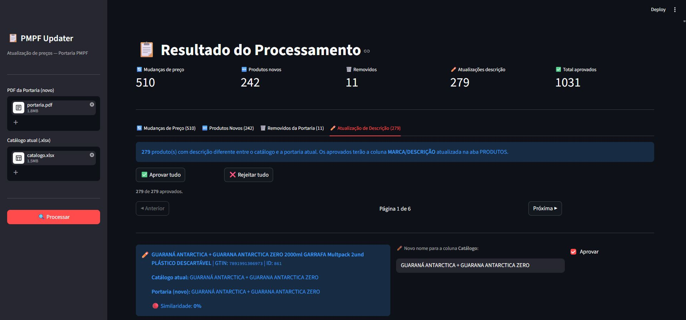

PMPF Updater
Sistema que automatiza a atualização do catálogo de preços PMPF (usado no cálculo de ICMS por substituição tributária) da SEFA-PA. Extrai tabelas de PDFs de portarias, compara com o catálogo em Excel e apresenta as mudanças numa interface web para revisão e aprovação, eliminando um processo antes feito manualmente, linha a linha.